Fixed-budget prediction, measured-panel compression, true hidden-gene replacement, prospective nomination and selector trade-offs are kept as separate evidence contracts.
Compact panels are an experimental-design contract, not universal selector superiority.
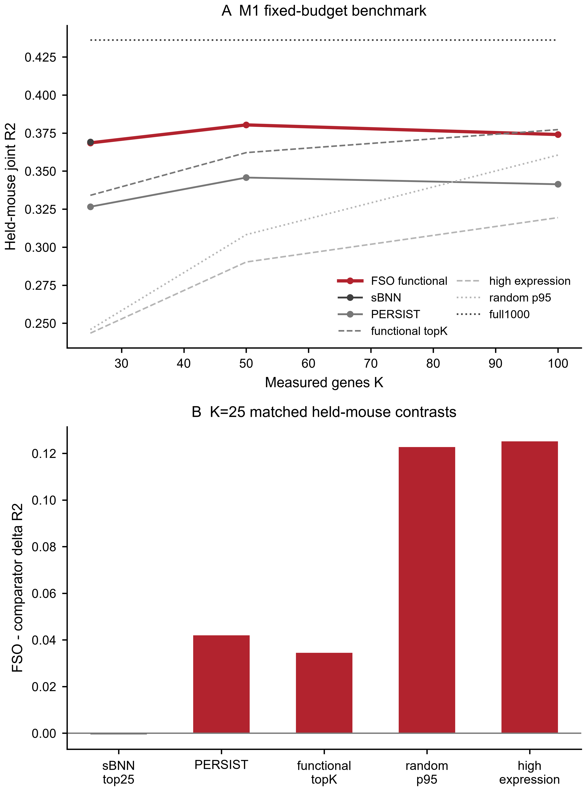
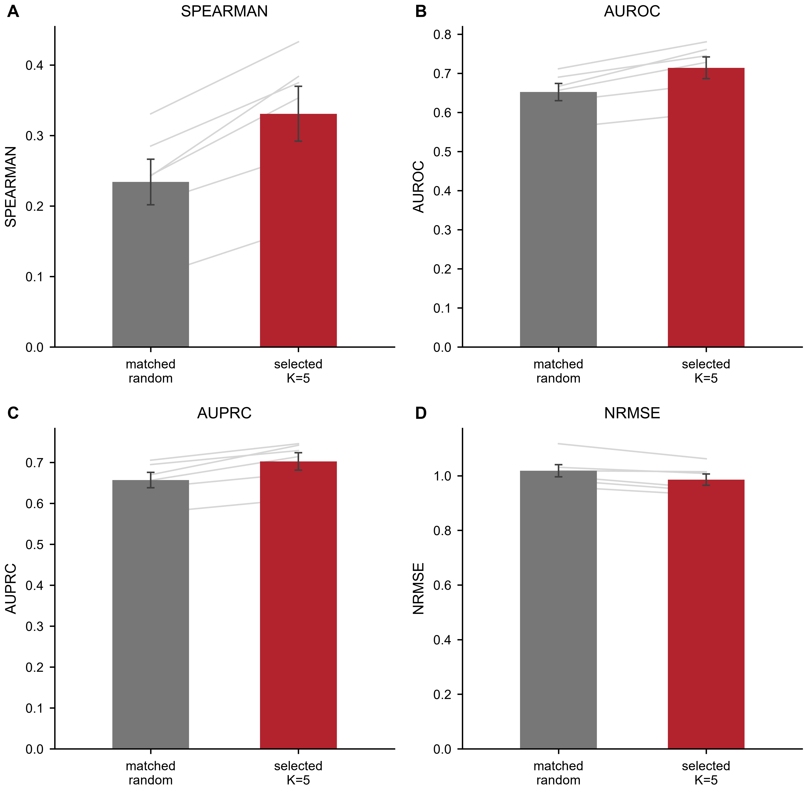
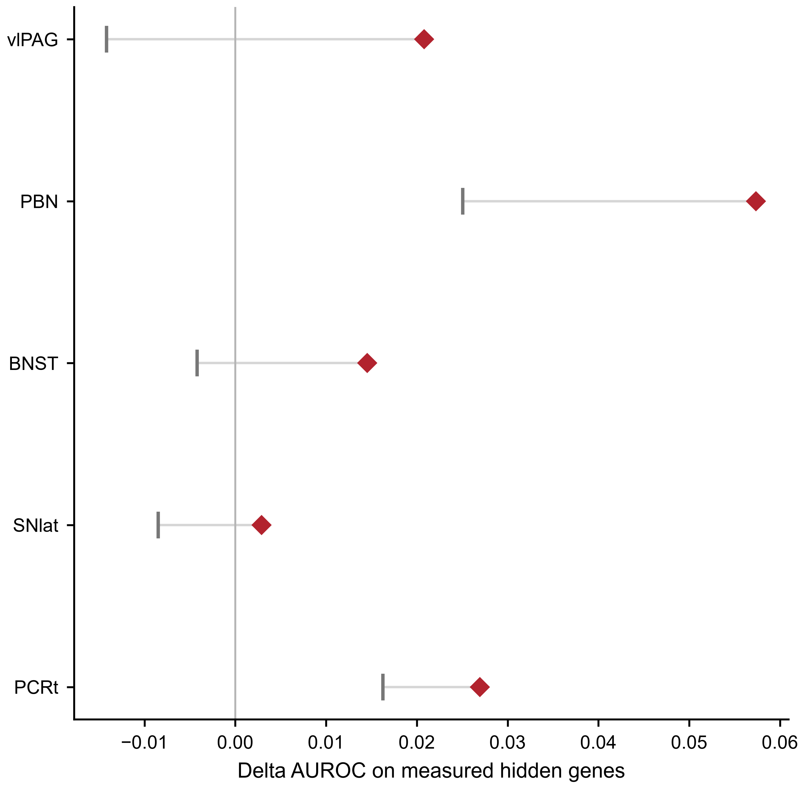
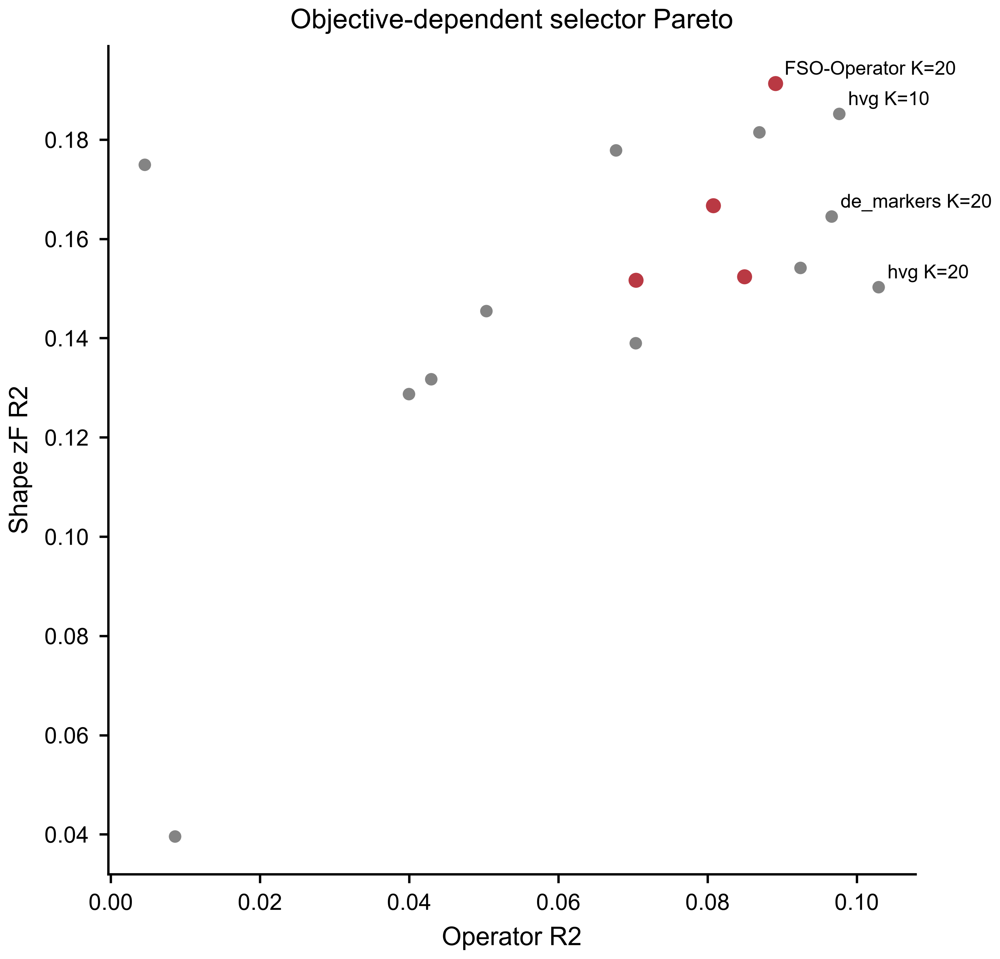
Fixed-budget assay design is multi-objective: predictive efficiency, measured-panel compression, true hidden-gene replacement, and selector trade-offs are distinct evidence contracts.
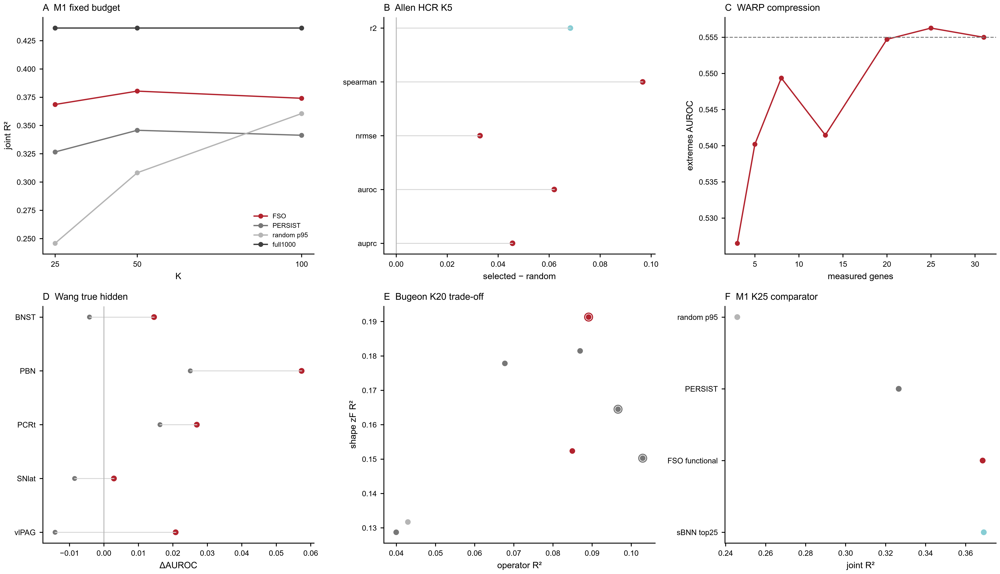
M1 Patch-seq supports efficient fixed-budget functional panel design: FSO beats PERSIST and random controls, but at K25 it is competitive rather than superior to sBNN.
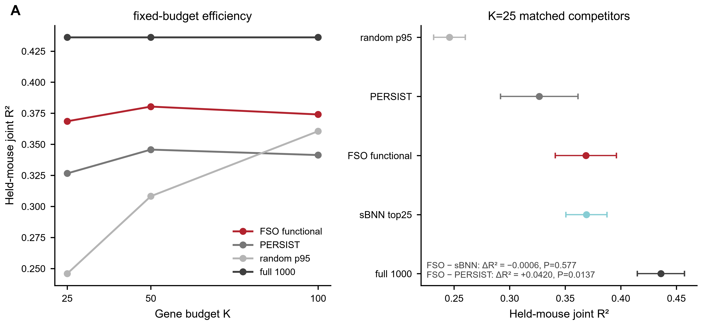
Allen visual-learning same-cell 2P+HCR provides an independent measured-gene replication: at K=5, Spearman, AUROC, AUPRC and NRMSE pass BH q<0.05; R2 is directional.
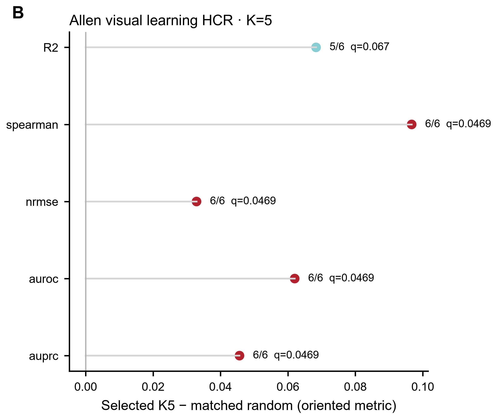
WARP demonstrates measured-panel compression: compact measured subsets retain much of the full31 classification and rank information.
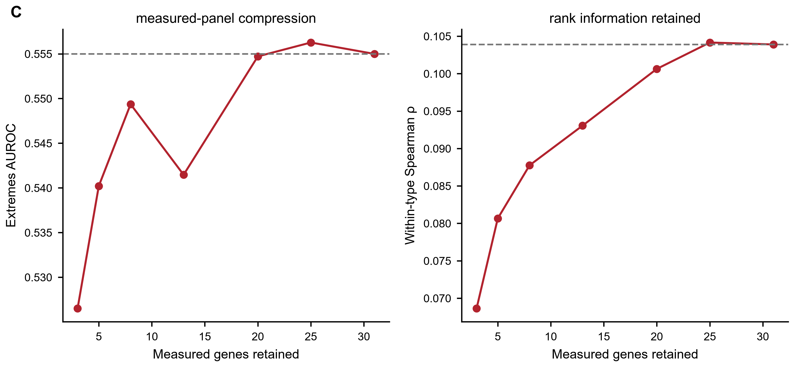
Wang 2023 is the true hidden-gene replacement validation: selected true hidden genes show positive AUROC advantage over matched-random hidden genes across all five targets.
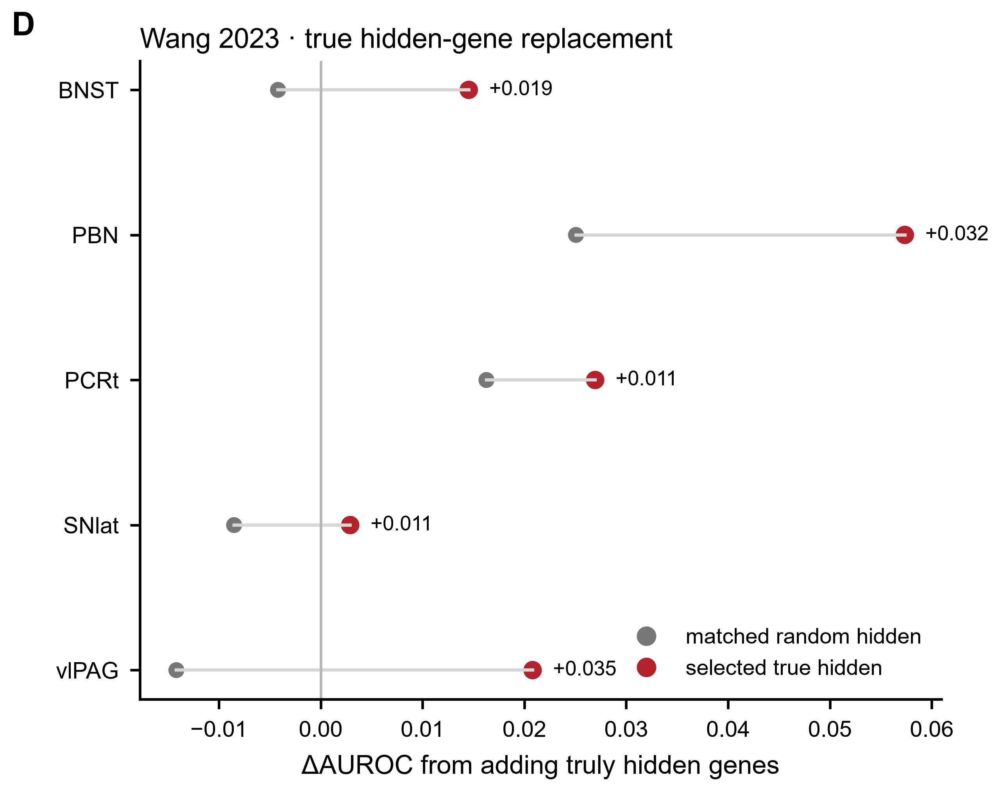
Bugeon shows objective dependence: no single panel selector is universally optimal for both operator prediction and response-shape preservation.
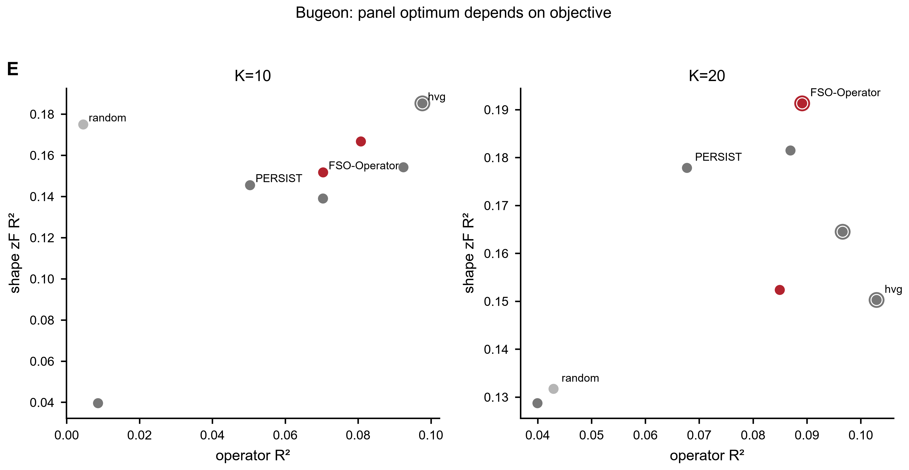
M1 fold-level data show robust FSO improvement over PERSIST but no evidence that FSO outperforms sBNN at K25.
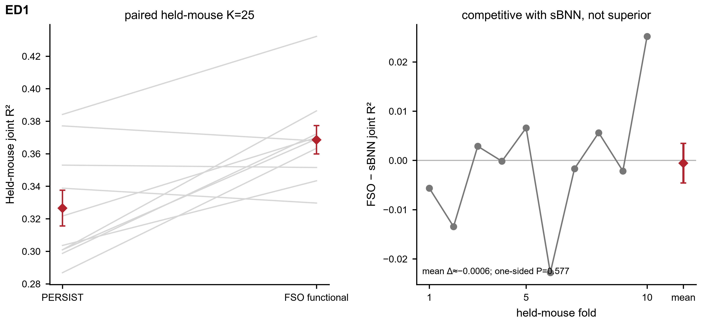
Allen HCR K5 is the strongest budget point and the result is stable to strict HCR de-duplication.
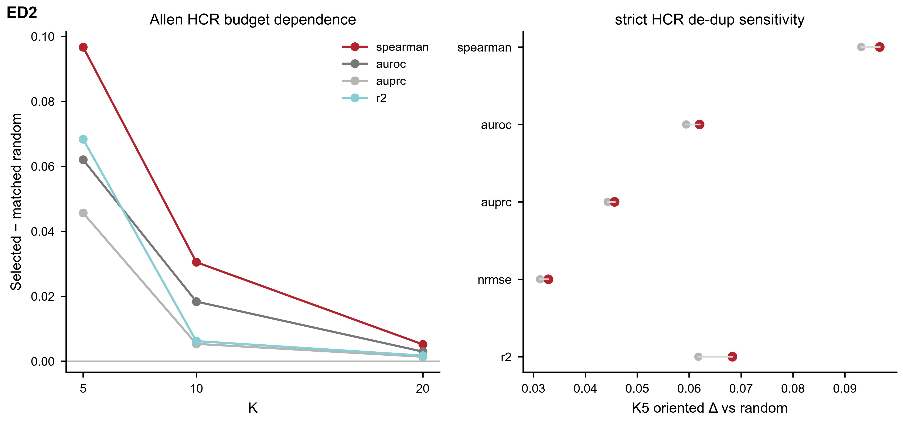
WARP fixed-budget replacement does not beat the full31 measured panel; addition is a distinct contract and is only numerically higher in current summaries.
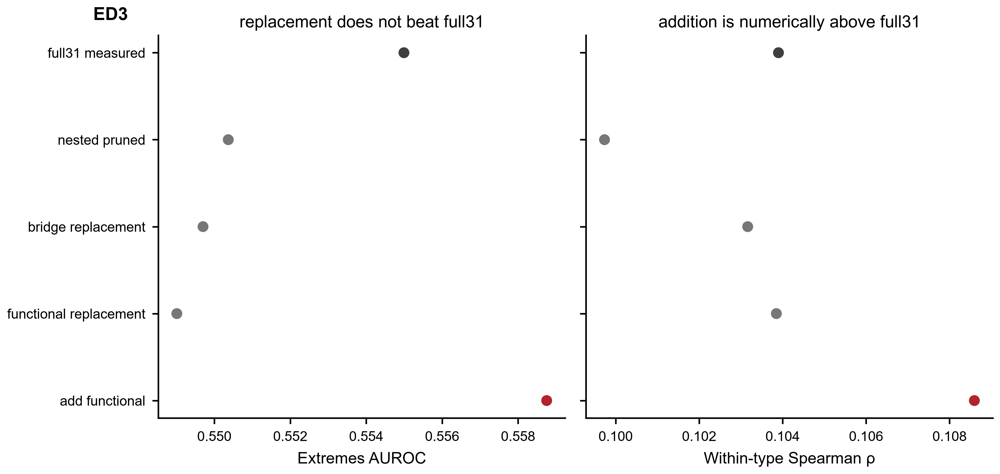
Zhao prospective marker compression is a nomination tier, not true hidden replacement; no current prospective row is FDR-supported.
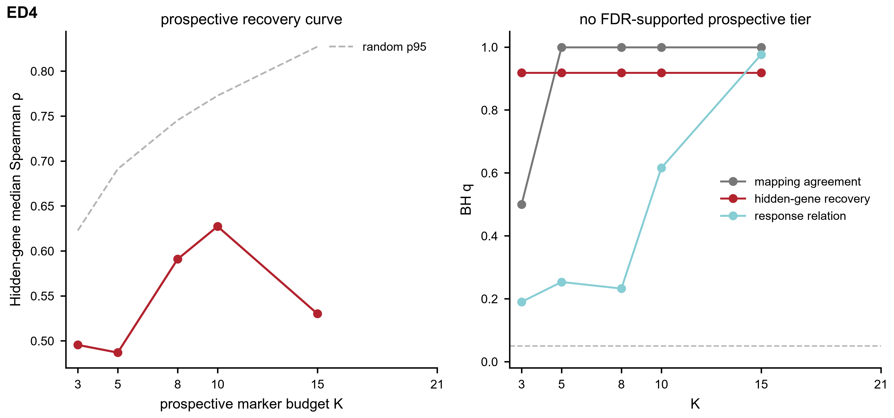
Broad held-unit replications are mostly directional and none survives the current global BH correction.
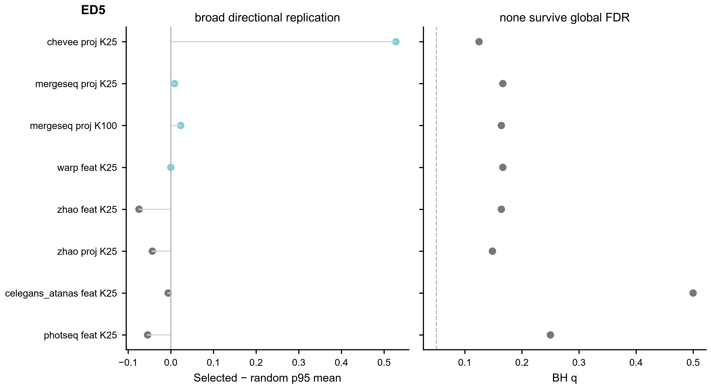